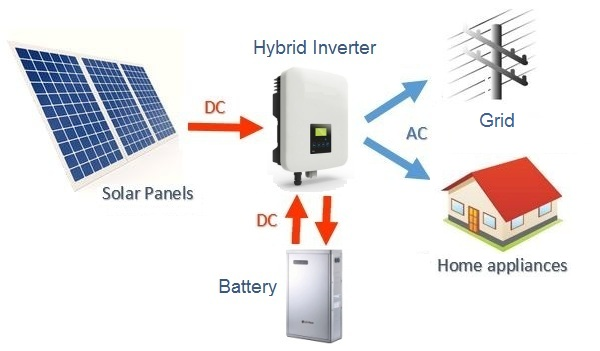

Solar power is a form of free energy from the sun that is freely available to us. This energy can be converted into useful electricity by solar panels and solar water heating systems.
Since many years, solar energy has been regarded as a significant source of energy, capable of meeting all of our energy requirements while causing no harm to the environment.
The sun is an infinite source of free energy, and solar photovoltaic (PV) panels are used to convert it into usable electricity. A solar panel is made of a semi-conducting material based on silicon that is compressed between two electrical contacts. When sunlight strikes a solar panel, the photon particles are absorbed and converted into electrons of Direct Current (DC) electricity.
The off-grid solar system is a battery based, independent solar system that does not need a utility grid to illuminate your places. It is a complete solar setup with solar panels, solar battery, and solar inverter, and is ideal to lighten a home even in a far off location. This solar system is more prominent as it comes with a power backup.
An on-grid solar system also known as grid tie or connected solar system is the most cost effective type for solar system. It is a complete solar setup that comes with highly efficient solar panels, on-grid solar inverter and other standard solar accessories. This system will not only provides you continious electricity but will also reduce your heavy electricity bills.
While choosing a solar system for home, institute, business or industry, people often choose either an on grid solar system or an off grid solar system. But now one more option is available in the market and that is “Hybrid Solar System”. This system is a combination of on grid solar system and off grid solar system. It has battery backup in it to store power and it also have the ability to feed surplus electricity into main grid.
